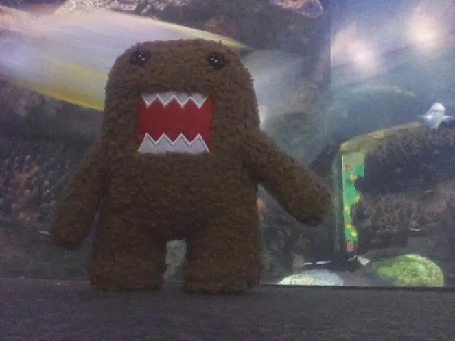
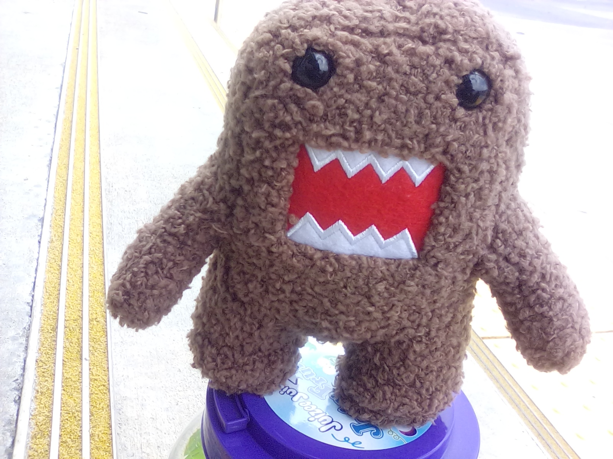
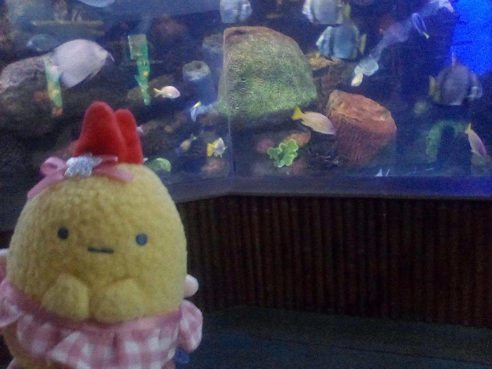

LaZuLi PaRaDisE - Meeting my GF(again)


A few days ago, me and my girlfriend met face to face for the 2nd time ever. The last time
we met, we were only together for a day. But this time we had 3 days to be together. And it was
amazing. The first day, we met at a local mall. Which was very scary because when i got there, I didnt
know exactly where she was in the mall, just that she was in a particular store. And I stopped at a bench
to tie my shoe, or something like that, i cant remember exactly what, but when i did, that is when she walked
out of the store and we just saw each other, not even expecting it. I'm generally a pretty shy person, and
take a while to get warmed up to people, but with her it took hardly any time at all. I was a little awkward
for the first 10 or 15 minutes but it became natural to speak with her after that. And normally it takes hours
or days for me to really get comfortable with someone. And just being with her, made it easier for me to speak
to people. On the way to visit her on the second day (she stayed in the nearest city to me, not where i live)
I spoke to the driver of the car like a normal person instead of being all quite or too scared to speak. (I dont
own a car so had to use taxi services and such). Anyways, in the mall, we went around to stores and she got a few
things for her self, and then got me a plush from build a bear. And after that we went to a nice restraunt that I will
not name. It was very good, but it was during that dinner that i realized that i forgot the plush in the mall when we left
because i am retarded. I tried not to let that get me down too much. We went to her hotel, and sat in the lobby as she
gave me all the stuff she had been collecting to give me over the last year. She gave me many plushes and snacks. Like one
of my favorite sweets, peeps. And some ramune, some skin care and hair care products and perfumes that i really like. SOme
of which ive never even had because ive never been able to afford it, so its a real luxury to be gifted for me. She gave me
a looooot of stuff. I will attach some of my favorites in photos, but one of them is a Domo plush. AND a domo poster.
(i forgot to mention she also got me a domo shirt from the mall) after this we hugged goodbye and then I had to go home for
the night. And the next day, got a ride back to her hotel, and we went to one of my favorite restraunts for lunch. It was very
very good. We went around a petstore to look at all the animals they had and stuff, then went to an aquarium! We both had a blast
walking around all day looking at the fish. It was such a great time, i loved every second of it. After that we went to this one
japanese store, and she got some stuff for her self as i annoyed her by pretending to soy out over every mundane item they had going
"OH MY GOD!! THEY HAVE A FLY SWATTER BUT ITS JAPANESE!!!!!!" which was pretty funny. I got some japanese gummy candies, and gum, which
was pretty good, some Hi-Chew, some sort of japanese apple juice and milk tea, as well as a cool fountain pen, and new ear buds because the
ones i have been using were reeeeeeally bad. These ones costed only 8 USD i think, and sound very good especially for the price. Great noise
isolation. After that, we went back to the hotel and sat in the lobby together and went to dinner later that night at a restraunt that i wont
name but was waaay too expensive for me to ever eat at normally so it was also a great treat for me(shes rich). After that, i yet again had to return
home for the night, and returned the next day. We went to this one restraunt she was obsessed with, but again I will not name, and had to walk to a
bus stop to eat it because their indoor seating was closed ofr what ever reason. I had fries adn catfish and they were very good, but it was soooo
hot out side that day so we speed ran eating so we could wait inside a convienece store to cool off. After thaaaat we went to a frozen yogurt place,
and ate that together (also outside because they also had their indoors closed for what ever reason). This was on the 4th of july, so after we did
all that, we went to get some snacks at a store so that we could watch the fire works together, but first we went to eat at Olive Garden to relive the
first time we met in person(refer to My gf Blog for that.) We couldnt really see a ton of them, but we could hear them all
which is more than enough for me becuase i love the sound. Also, some jack ass was going around really fast in his car shooting a gun out of his window.
But the night was nice, and we ended up both falling asleep in the lobby of the hotel together lol. When we woke up, we went to this one asian store
and got a bunch more japanese candy and stuff like that, and i got a shrimp cat toy. Then, we went to a arcade to play some games together. And after that,
we returned to the mall again because she wanted to buy me a ring in my favorite color (purple :D). She also took me back to build a bear because the mall
didnt have my dragon plush i left in their lost and found so she got me a new one, as losing it actually made me cry a lot the night when i went home because
of me losing it. And now i have one with her voice in it. We got some other stuff from a store, like this one Domo thing that has like, random Domos in it.
I wanted the clear domo because it looked cool but i got an orange karate one, which is also very cool looking. After that, we went back to her hotel, got all
of our stuff, and then she took me to my house and dropped me off and she had to go back to her home which is very far away from me sadly :(. I miss her a lot,
and hope i can see her again soon because going out and doing all the things with her was so much fun for me. Even the time we just went into a grocery store and
got groceries was so much fun for me. Even if she didnt spend a cent on me, i would of had just as much fun just being with her. I miss her so much. But i know that
she is going to come back to see me as soon as she can. This was one of the greatest weeks of my life and im so happy i got to experience it. As usual, thank you
for reading, and if you have an questions or wanna see more photos feel free to send me email or a PM on XMPP!   
_
{\o/}
/_\
made by LaZuLi PaRaDisE|XMPP/Email:
LaZuLiPaRaDisE@disroot.org